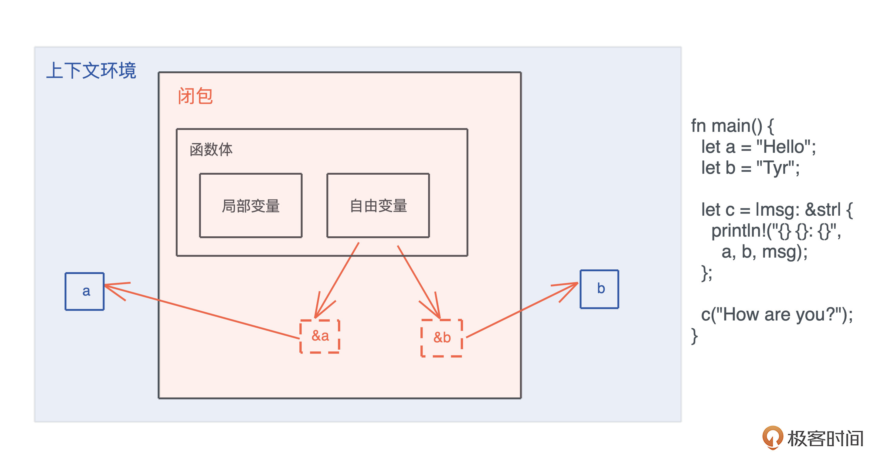
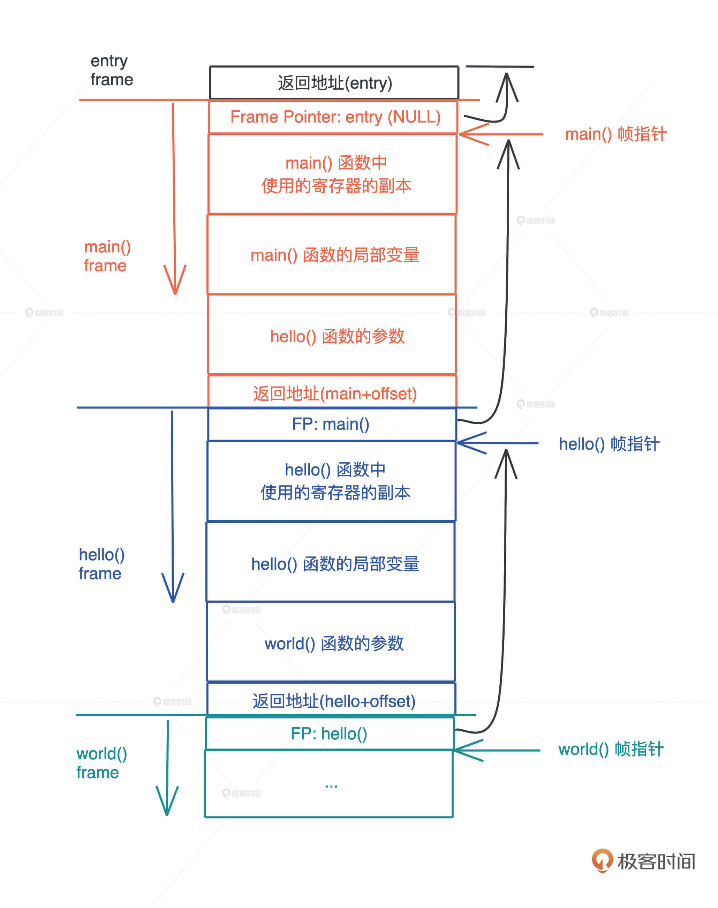
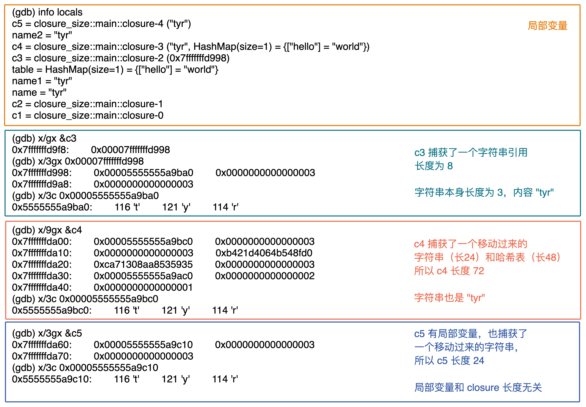
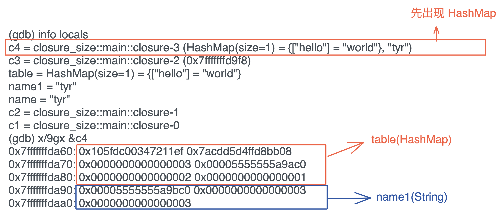
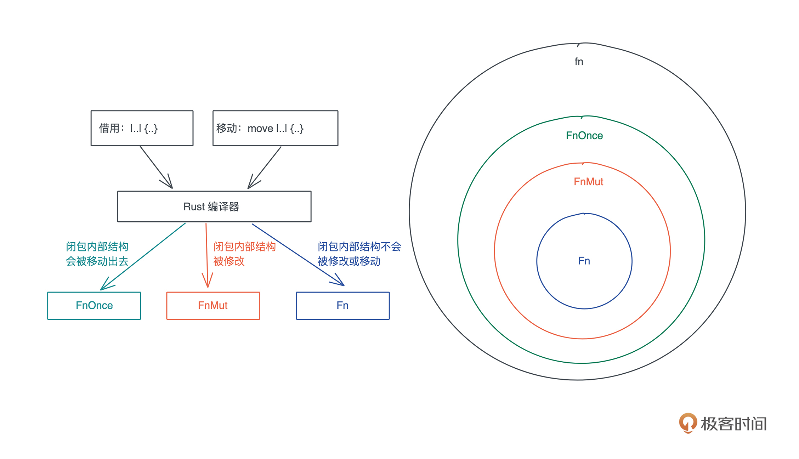

- 00 开篇词 让Rust成为你的下一门主力语言.md.html
- 01 内存：值放堆上还是放栈上，这是一个问题.md.html
- 02 串讲：编程开发中，那些你需要掌握的基本概念.md.html
- 03 初窥门径：从你的第一个Rust程序开始！.md.html
- 04 get hands dirty：来写个实用的CLI小工具.md.html
- 05 get hands dirty：做一个图片服务器有多难？.md.html
- 06 get hands dirty：SQL查询工具怎么一鱼多吃？.md.html
- 07 所有权：值的生杀大权到底在谁手上？.md.html
- 08 所有权：值的借用是如何工作的？.md.html
- 09 所有权：一个值可以有多个所有者么？.md.html
- 10 生命周期：你创建的值究竟能活多久？.md.html
- 11 内存管理：从创建到消亡，值都经历了什么？.md.html
- 12 类型系统：Rust的类型系统有什么特点？.md.html
- 13 类型系统：如何使用trait来定义接口？.md.html
- 14 类型系统：有哪些必须掌握的trait？.md.html
- 15 数据结构：这些浓眉大眼的结构竟然都是智能指针？.md.html
- 16 数据结构：Vec_T_、&[T]、Box_[T]_ ，你真的了解集合容器么？.md.html
- 17 数据结构：软件系统核心部件哈希表，内存如何布局？.md.html
- 18 错误处理：为什么Rust的错误处理与众不同？.md.html
- 19 闭包：FnOnce、FnMut和Fn，为什么有这么多类型？.md.html
- 20 4 Steps ：如何更好地阅读Rust源码？.md.html
- 21 阶段实操（1）：构建一个简单的KV server-基本流程.md.html
- 22 阶段实操（2）：构建一个简单的KV server-基本流程.md.html
- 23 类型系统：如何在实战中使用泛型编程？.md.html
- 24 类型系统：如何在实战中使用trait object？.md.html
- 25 类型系统：如何围绕trait来设计和架构系统？.md.html
- 26 阶段实操（3）：构建一个简单的KV server-高级trait技巧.md.html
- 27 生态系统：有哪些常有的Rust库可以为我所用？.md.html
- 28 网络开发（上）：如何使用Rust处理网络请求？.md.html
- 29 网络开发（下）：如何使用Rust处理网络请求？.md.html
- 30 Unsafe Rust：如何用C++的方式打开Rust？.md.html
- 31 FFI：Rust如何和你的语言架起沟通桥梁？.md.html
- 32 实操项目：使用PyO3开发Python3模块.md.html
- 33 并发处理（上）：从atomics到Channel，Rust都提供了什么工具？.md.html
- 34 并发处理（下）：从atomics到Channel，Rust都提供了什么工具？.md.html
- 35 实操项目：如何实现一个基本的MPSC channel？.md.html
- 36 阶段实操（4）：构建一个简单的KV server-网络处理.md.html
- 37 阶段实操（5）：构建一个简单的KV server-网络安全.md.html
- 38 异步处理：Future是什么？它和async_await是什么关系？.md.html
- 39 异步处理：async_await内部是怎么实现的？.md.html
- 40 异步处理：如何处理异步IO？.md.html
- 41 阶段实操（6）：构建一个简单的KV server-异步处理.md.html
- 42 阶段实操（7）：构建一个简单的KV server-如何做大的重构？.md.html
- 43 生产环境：真实世界下的一个Rust项目包含哪些要素？.md.html
- 44 数据处理：应用程序和数据如何打交道？.md.html
- 45 阶段实操（8）：构建一个简单的KV server-配置_测试_监控_CI_CD.md.html
- 46 软件架构：如何用Rust架构复杂系统？.md.html
- 加餐 Rust2021版次问世了！.md.html
- 加餐 代码即数据：为什么我们需要宏编程能力？.md.html
- 加餐 宏编程（上）：用最“笨”的方式撰写宏.md.html
- 加餐 宏编程（下）：用 syn_quote 优雅地构建宏.md.html
- 加餐 愚昧之巅：你的Rust学习常见问题汇总.md.html
- 加餐 期中测试：参考实现讲解.md.html
- 加餐 期中测试：来写一个简单的grep命令行.md.html
- 加餐 这个专栏你可以怎么学，以及Rust是否值得学？.md.html
- 大咖助场 开悟之坡（上）：Rust的现状、机遇与挑战.md.html
- 大咖助场 开悟之坡（下）：Rust的现状、机遇与挑战.md.html
- 特别策划 学习锦囊（一）：听听课代表们怎么说.md.html
- 特别策划 学习锦囊（三）：听听课代表们怎么说.md.html
- 特别策划 学习锦囊（二）：听听课代表们怎么说.md.html
- 用户故事 绝望之谷：改变从学习开始.md.html
- 用户故事 语言不仅是工具，还是思维方式.md.html
- 结束语 永续之原：Rust学习，如何持续精进？.md.html
- 捐赠
19 闭包：FnOnce、FnMut和Fn，为什么有这么多类型？
你好，我是陈天。
在现代编程语言中，闭包是一个很重要的工具，可以让我们很方便地以函数式编程的方式来撰写代码。因为闭包可以作为参数传递给函数，可以作为返回值被函数返回，也可以为它实现某个 trait，使其能表现出其他行为，而不仅仅是作为函数被调用。
这些都是怎么做到的？这就和 Rust 里闭包的本质有关了，我们今天就来学习基础篇的最后一个知识点：闭包。
闭包的定义
之前介绍了闭包的基本概念和一个非常简单的例子：
闭包是将函数，或者说代码和其环境一起存储的一种数据结构。闭包引用的上下文中的自由变量，会被捕获到闭包的结构中，成为闭包类型的一部分（[第二讲]）。
闭包会根据内部的使用情况，捕获环境中的自由变量。在 Rust 里，闭包可以用 |args| {code} 来表述，图中闭包 c 捕获了上下文中的 a 和 b，并通过引用来使用这两个自由变量：-

除了用引用来捕获自由变量之外，还有另外一个方法使用 move 关键字 move |args| {code} 。
之前的课程中，多次见到了创建新线程的 thread::spawn，它的参数就是一个闭包：
pub fn spawn<F, T>(f: F) -> JoinHandle<T>
where
F: FnOnce() -> T,
F: Send + 'static,
T: Send + 'static,
仔细看这个接口：
- F: FnOnce() → T，表明 F 是一个接受 0 个参数、返回 T 的闭包。FnOnce 我们稍后再说。
- F: Send + ‘static，说明闭包 F 这个数据结构，需要静态生命周期或者拥有所有权，并且它还能被发送给另一个线程。
- T: Send + ‘static，说明闭包 F 返回的数据结构 T，需要静态生命周期或者拥有所有权，并且它还能被发送给另一个线程。
1 和 3 都很好理解，2 就有些费解了。一个闭包，它不就是一段代码 + 被捕获的变量么？需要静态生命周期或者拥有所有权是什么意思？
拆开看。代码自然是静态生命周期了，那么是不是意味着被捕获的变量，需要静态生命周期或者拥有所有权？
的确如此。在使用 thread::spawn 时，我们需要使用 move 关键字，把变量的所有权从当前作用域移动到闭包的作用域，让 thread::spawn 可以正常编译通过：
use std::thread;
fn main() {
let s = String::from("hello world");
let handle = thread::spawn(move || {
println!("moved: {:?}", s);
});
handle.join().unwrap();
}
但你有没有好奇过，加 move 和不加 move，这两种闭包有什么本质上的不同？闭包究竟是一种什么样的数据类型，让编译器可以判断它是否满足 Send + ‘static 呢？我们从闭包的本质下手来尝试回答这两个问题。
闭包本质上是什么？
在官方的 Rust reference 中，有这样的定义：
A closure expression produces a closure value with a unique, anonymous type that cannot be written out. A closure type is approximately equivalent to a struct which contains the captured variables.
闭包是一种匿名类型，一旦声明，就会产生一个新的类型，但这个类型无法被其它地方使用。这个类型就像一个结构体，会包含所有捕获的变量。
所以闭包类似一个特殊的结构体？
为了搞明白这一点，我们得写段代码探索一下，建议你跟着敲一遍认真思考（代码）：
use std::{collections::HashMap, mem::size_of_val};
fn main() {
// 长度为 0
let c1 = || println!("hello world!");
// 和参数无关，长度也为 0
let c2 = |i: i32| println!("hello: {}", i);
let name = String::from("tyr");
let name1 = name.clone();
let mut table = HashMap::new();
table.insert("hello", "world");
// 如果捕获一个引用，长度为 8
let c3 = || println!("hello: {}", name);
// 捕获移动的数据 name1(长度 24) + table(长度 48)，closure 长度 72
let c4 = move || println!("hello: {}, {:?}", name1, table);
let name2 = name.clone();
// 和局部变量无关，捕获了一个 String name2，closure 长度 24
let c5 = move || {
let x = 1;
let name3 = String::from("lindsey");
println!("hello: {}, {:?}, {:?}", x, name2, name3);
};
println!(
"c1: {}, c2: {}, c3: {}, c4: {}, c5: {}, main: {}",
size_of_val(&c1),
size_of_val(&c2),
size_of_val(&c3),
size_of_val(&c4),
size_of_val(&c5),
size_of_val(&main),
)
}
分别生成了 5 个闭包：
- c1 没有参数，也没捕获任何变量，从代码输出可以看到，c1 长度为 0；
- c2 有一个 i32 作为参数，没有捕获任何变量，长度也为 0，可以看出参数跟闭包的大小无关；
- c3 捕获了一个对变量 name 的引用，这个引用是 &String，长度为 8。而 c3 的长度也是 8；
- c4 捕获了变量 name1 和 table，由于用了 move，它们的所有权移动到了 c4 中。c4 长度是 72，恰好等于 String 的 24 字节，加上 HashMap 的 48 字节。
- c5 捕获了 name2，name2 的所有权移动到了 c5，虽然 c5 有局部变量，但它的大小和局部变量也无关，c5 的大小等于 String 的 24 字节。
学到这里，前面的第一个问题就解决了，可以看到，不带 move 时，闭包捕获的是对应自由变量的引用；带 move 时，对应自由变量的所有权会被移动到闭包结构中。
继续分析这段代码的运行结果。
还知道了，闭包的大小跟参数、局部变量都无关，只跟捕获的变量有关。如果你回顾[第一讲]函数调用，参数和局部变量在栈中如何存放的图，就很清楚了：因为它们是在调用的时刻才在栈上产生的内存分配，说到底和闭包类型本身是无关的，所以闭包的大小跟它们自然无关。- 
那一个闭包类型在内存中究竟是如何排布的，和结构体有什么区别？我们要再次结合 rust-gdb 探索，看看上面的代码在运行结束前，几个长度不为 0 闭包内存里都放了什么：- 
可以看到，c3 的确是一个引用，把它指向的内存地址的 24 个字节打出来，是 (ptr | cap | len) 的标准结构。如果打印 ptr 对应的堆内存的 3 个字节，是 ‘t’ ‘y’ ‘r’。
而 c4 捕获的 name 和 table，内存结构和下面的结构体一模一样：
struct Closure4 {
name: String, // (ptr|cap|len)=24字节
table: HashMap<&str, &str> // (RandomState(16)|mask|ctrl|left|len)=48字节
}
不过，对于 closure 类型来说，编译器知道像函数一样调用闭包 c4() 是合法的，并且知道执行 c4() 时，代码应该跳转到什么地址来执行。在执行过程中，如果遇到 name、table，可以从自己的数据结构中获取。
那么多想一步，闭包捕获变量的顺序，和其内存结构的顺序是一致的么？的确如此，如果我们调整闭包里使用 name1 和 table 的顺序：
let c4 = move || println!("hello: {:?}, {}", table, name1);
其数据的位置是相反的，类似于：
struct Closure4 {
table: HashMap<&str, &str> // (RandomState(16)|mask|ctrl|left|len)=48字节
name: String, // (ptr|cap|len)=24字节
}
从 gdb 中也可以看到同样的结果：- 
不过这只是逻辑上的位置，如果你还记得[第 11 讲] struct 在内存的排布，Rust 编译器会重排内存，让数据能够以最小的代价对齐，所以有些情况下，内存中数据的顺序可能和 struct 定义不一致。
所以回到刚才闭包和结构体的比较。在 Rust 里，闭包产生的匿名数据类型，格式和 struct 是一样的。看图中 gdb 的输出，闭包是存储在栈上，并且除了捕获的数据外，闭包本身不包含任何额外函数指针指向闭包的代码。如果你理解了 c3/c4 这两个闭包，c5 是如何构造的就很好理解了。
现在，你是不是可以回答为什么 thread::spawn 对传入的闭包约束是 Send + ‘static 了？究竟什么样的闭包满足它呢？很明显，使用了 move 且 move 到闭包内的数据结构满足 Send，因为此时，闭包的数据结构拥有所有数据的所有权，它的生命周期是 ‘static。
看完Rust闭包的内存结构，你是不是想说“就这”，没啥独特之处吧？但是对比其他语言，结合接下来我的解释，你再仔细想想就会有一种“这怎么可能”的惊讶。
不同语言的闭包设计
闭包最大的问题是变量的多重引用导致生命周期不明确，所以你先想，其它支持闭包的语言（lambda 也是闭包），它们的闭包会放在哪里？
栈上么？是，又好像不是。
因为闭包这玩意，从当前上下文中捕获了些变量，变得有点不伦不类，不像函数那样清楚，尤其是这些被捕获的变量，它们的归属和生命周期处理起来很麻烦。所以，大部分编程语言的闭包很多时候无法放在栈上，需要额外的堆分配。你可以看这个 Golang 的例子。
不光 Golang，Java/Swift/Python/JavaScript 等语言都是如此，这也是为什么大多数编程语言闭包的性能要远低于函数调用。因为使用闭包就意味着：额外的堆内存分配、潜在的动态分派（很多语言会把闭包处理成函数指针）、额外的内存回收。
在性能上，唯有 C++ 的 lambda 和 Rust 闭包类似，不过 C++ 的闭包还有一些场景会触发堆内存分配。如果你还记得 16 讲的 Rust/Swift/Kotlin iterator 函数式编程的性能测试：-

Kotlin 运行超时，Swift 很慢，Rust 的性能却和使用命令式编程的 C 几乎一样，除了编译器优化的效果，也因为 Rust 闭包的性能和函数差不多。
为什么 Rust 可以做到这样呢？这又跟 Rust 从根本上使用所有权和借用，解决了内存归属问题有关。
在其他语言中，闭包变量因为多重引用导致生命周期不明确，但 Rust 从一开始就消灭了这个问题：
- 如果不使用 move 转移所有权，闭包会引用上下文中的变量，这个引用受借用规则的约束，所以只要编译通过，那么闭包对变量的引用就不会超过变量的生命周期，没有内存安全问题。
- 如果使用 move 转移所有权，上下文中的变量在转移后就无法访问，闭包完全接管这些变量，它们的生命周期和闭包一致，所以也不会有内存安全问题。
而 Rust 为每个闭包生成一个新的类型，又使得调用闭包时可以直接和代码对应，省去了使用函数指针再转一道手的额外消耗。
所以还是那句话，当回归到最初的本原，你解决的不是单个问题，而是由此引发的所有问题。我们不必为堆内存管理设计 GC、不必为其它资源的回收提供 defer 关键字、不必为并发安全进行诸多限制、也不必为闭包挖空心思搞优化。
Rust的闭包类型
现在我们搞明白了闭包究竟是个什么东西，在内存中怎么表示，接下来我们看看 FnOnce/FnMut/Fn 这三种闭包类型有什么区别。
在声明闭包的时候，我们并不需要指定闭包要满足的约束，但是当闭包作为函数的参数或者数据结构的一个域时，我们需要告诉调用者，对闭包的约束。还以 thread::spawn 为例，它要求传入的闭包满足 FnOnce trait。
FnOnce
先来看 FnOnce。它的定义如下：
pub trait FnOnce<Args> {
type Output;
extern "rust-call" fn call_once(self, args: Args) -> Self::Output;
}
FnOnce 有一个关联类型 Output，显然，它是闭包返回值的类型；还有一个方法 call_once，要注意的是 call_once 第一个参数是 self，它会转移 self 的所有权到 call_once 函数中。
这也是为什么 FnOnce 被称作 Once ：它只能被调用一次。再次调用，编译器就会报变量已经被 move 这样的常见所有权错误了。
至于 FnOnce 的参数，是一个叫 Args 的泛型参数，它并没有任何约束。如果你对这个感兴趣可以看文末的参考资料。
看一个隐式的 FnOnce 的例子：
fn main() {
let name = String::from("Tyr");
// 这个闭包啥也不干，只是把捕获的参数返回去
let c = move |greeting: String| (greeting, name);
let result = c("hello".to_string());
println!("result: {:?}", result);
// 无法再次调用
let result = c("hi".to_string());
}
这个闭包 c，啥也没做，只是把捕获的参数返回。就像一个结构体里，某个字段被转移走之后，就不能再访问一样，闭包内部的数据一旦被转移，这个闭包就不完整了，也就无法再次使用，所以它是一个 FnOnce 的闭包。
如果一个闭包并不转移自己的内部数据，那么它就不是 FnOnce，然而，一旦它被当做 FnOnce 调用，自己会被转移到 call_once 函数的作用域中，之后就无法再次调用了，我们看个例子（代码）：
fn main() {
let name = String::from("Tyr");
// 这个闭包会 clone 内部的数据返回，所以它不是 FnOnce
let c = move |greeting: String| (greeting, name.clone());
// 所以 c1 可以被调用多次
println!("c1 call once: {:?}", c("qiao".into()));
println!("c1 call twice: {:?}", c("bonjour".into()));
// 然而一旦它被当成 FnOnce 被调用，就无法被再次调用
println!("result: {:?}", call_once("hi".into(), c));
// 无法再次调用
// let result = c("hi".to_string());
// Fn 也可以被当成 FnOnce 调用，只要接口一致就可以
println!("result: {:?}", call_once("hola".into(), not_closure));
}
fn call_once(arg: String, c: impl FnOnce(String) -> (String, String)) -> (String, String) {
c(arg)
}
fn not_closure(arg: String) -> (String, String) {
(arg, "Rosie".into())
}
FnMut
理解了 FnOnce，我们再来看 FnMut，它的定义如下：
pub trait FnMut<Args>: FnOnce<Args> {
extern "rust-call" fn call_mut(
&mut self,
args: Args
) -> Self::Output;
}
首先，FnMut “继承”了 FnOnce，或者说 FnOnce 是 FnMut 的 super trait。所以FnMut也拥有 Output 这个关联类型和 call_once 这个方法。此外，它还有一个 call_mut() 方法。注意 call_mut() 传入 &mut self，它不移动 self，所以 FnMut 可以被多次调用。
因为 FnOnce 是 FnMut 的 super trait，所以，一个 FnMut 闭包，可以被传给一个需要 FnOnce 的上下文，此时调用闭包相当于调用了 call_once()。
如果你理解了前面讲的闭包的内存组织结构，那么 FnMut 就不难理解，就像结构体如果想改变数据需要用 let mut 声明一样，如果你想改变闭包捕获的数据结构，那么就需要 FnMut。我们看个例子（代码）：
fn main() {
let mut name = String::from("hello");
let mut name1 = String::from("hola");
// 捕获 &mut name
let mut c = || {
name.push_str(" Tyr");
println!("c: {}", name);
};
// 捕获 mut name1，注意 name1 需要声明成 mut
let mut c1 = move || {
name1.push_str("!");
println!("c1: {}", name1);
};
c();
c1();
call_mut(&mut c);
call_mut(&mut c1);
call_once(c);
call_once(c1);
}
// 在作为参数时，FnMut 也要显式地使用 mut，或者 &mut
fn call_mut(c: &mut impl FnMut()) {
c();
}
// 想想看，为啥 call_once 不需要 mut？
fn call_once(c: impl FnOnce()) {
c();
}
在声明的闭包 c 和 c1 里，我们修改了捕获的 name 和 name1。不同的是 name 使用了引用，而 name1 移动了所有权，这两种情况和其它代码一样，也需要遵循所有权和借用有关的规则。所以，如果在闭包 c 里借用了 name，你就不能把 name 移动给另一个闭包 c1。
这里也展示了，c 和 c1 这两个符合 FnMut 的闭包，能作为 FnOnce 来调用。我们在代码中也确认了，FnMut 可以被多次调用，这是因为 call_mut() 使用的是 &mut self，不移动所有权。
Fn
最后我们来看看 Fn trait。它的定义如下：
pub trait Fn<Args>: FnMut<Args> {
extern "rust-call" fn call(&self, args: Args) -> Self::Output;
}
可以看到，它“继承”了 FnMut，或者说 FnMut 是 Fn 的 super trait。这也就意味着任何需要 FnOnce 或者 FnMut 的场合，都可以传入满足 Fn 的闭包。我们继续看例子（代码）：
fn main() {
let v = vec![0u8; 1024];
let v1 = vec![0u8; 1023];
// Fn，不移动所有权
let mut c = |x: u64| v.len() as u64 * x;
// Fn，移动所有权
let mut c1 = move |x: u64| v1.len() as u64 * x;
println!("direct call: {}", c(2));
println!("direct call: {}", c1(2));
println!("call: {}", call(3, &c));
println!("call: {}", call(3, &c1));
println!("call_mut: {}", call_mut(4, &mut c));
println!("call_mut: {}", call_mut(4, &mut c1));
println!("call_once: {}", call_once(5, c));
println!("call_once: {}", call_once(5, c1));
}
fn call(arg: u64, c: &impl Fn(u64) -> u64) -> u64 {
c(arg)
}
fn call_mut(arg: u64, c: &mut impl FnMut(u64) -> u64) -> u64 {
c(arg)
}
fn call_once(arg: u64, c: impl FnOnce(u64) -> u64) -> u64 {
c(arg)
}
闭包的使用场景
在讲完Rust的三个闭包类型之后，最后来看看闭包的使用场景。虽然今天才开始讲闭包，但其实之前隐晦地使用了很多闭包。
thread::spawn 自不必说，我们熟悉的 Iterator trait 里面大部分函数都接受一个闭包，比如 map：
fn map<B, F>(self, f: F) -> Map<Self, F>
where
Self: Sized,
F: FnMut(Self::Item) -> B,
{
Map::new(self, f)
}
可以看到，Iterator 的 map() 方法接受一个 FnMut，它的参数是 Self::Item，返回值是没有约束的泛型参数 B。Self::Item 是 Iterator::next() 方法吐出来的数据，被 map 之后，可以得到另一个结果。
所以在函数的参数中使用闭包，是闭包一种非常典型的用法。另外闭包也可以作为函数的返回值，举个简单的例子（代码）：
use std::ops::Mul;
fn main() {
let c1 = curry(5);
println!("5 multiply 2 is: {}", c1(2));
let adder2 = curry(3.14);
println!("pi multiply 4^2 is: {}", adder2(4. * 4.));
}
fn curry<T>(x: T) -> impl Fn(T) -> T
where
T: Mul<Output = T> + Copy,
{
move |y| x * y
}
最后，闭包还有一种并不少见，但可能不太容易理解的用法：为它实现某个 trait，使其也能表现出其他行为，而不仅仅是作为函数被调用。比如说有些接口既可以传入一个结构体，又可以传入一个函数或者闭包。
我们看一个 tonic（Rust 下的 gRPC 库）的例子：
pub trait Interceptor {
/// Intercept a request before it is sent, optionally cancelling it.
fn call(&mut self, request: crate::Request<()>) -> Result<crate::Request<()>, Status>;
}
impl<F> Interceptor for F
where
F: FnMut(crate::Request<()>) -> Result<crate::Request<()>, Status>,
{
fn call(&mut self, request: crate::Request<()>) -> Result<crate::Request<()>, Status> {
self(request)
}
}
在这个例子里，Interceptor 有一个 call 方法，它可以让 gRPC Request 被发送出去之前被修改，一般是添加各种头，比如 Authorization 头。
我们可以创建一个结构体，为它实现 Interceptor，不过大部分时候 Interceptor 可以直接通过一个闭包函数完成。为了让传入的闭包也能通过 Interceptor::call() 来统一调用，可以为符合某个接口的闭包实现 Interceptor trait。掌握了这种用法，我们就可以通过某些 trait 把特定的结构体和闭包统一起来调用，是不是很神奇。
小结
Rust 闭包的效率非常高。首先闭包捕获的变量，都储存在栈上，没有堆内存分配。其次因为闭包在创建时会隐式地创建自己的类型，每个闭包都是一个新的类型。通过闭包自己唯一的类型，Rust 不需要额外的函数指针来运行闭包，所以闭包的调用效率和函数调用几乎一致。
Rust 支持三种不同的闭包 trait：FnOnce、FnMut 和 Fn。FnOnce 是 FnMut 的 super trait，而 FnMut 又是 Fn 的 super trait。从这些 trait 的接口可以看出，
- FnOnce 只能调用一次；
- FnMut 允许在执行时修改闭包的内部数据，可以执行多次；
- Fn 不允许修改闭包的内部数据，也可以执行多次。
总结一下三种闭包使用的情况以及它们之间的关系：
思考题
下面的代码，闭包 c 相当于一个什么样的结构体？它的长度多大？代码的最后，main() 函数还能访问变量 name 么？为什么？
fn main() {
let name = String::from("Tyr"); let vec = vec!["Rust", "Elixir", "Javascript"]; let v = &vec[..]; let data = (1, 2, 3, 4); let c = move || { println!("data: {:?}", data); println!("v: {:?}, name: {:?}", v, name.clone()); }; c(); // 请问在这里，还能访问 name 么？为什么？}
在讲到 FnMut 时，我们放了一段代码，在那段代码里，我问了一个问题：为啥 call_once 不需要 c 是 mut 呢？就像下面这样：
// 想想看，为啥 call_once 不需要 mut？ fn call_once(mut c: impl FnOnce()) {
c();}
为下面的代码添加实现，使其能够正常工作（代码）：
pub trait Executor {
fn execute(&self, cmd: &str) -> Result<String, &'static str>;}
struct BashExecutor {
env: String,}
impl Executor for BashExecutor {
fn execute(&self, cmd: &str) -> Result<String, &'static str> { Ok(format!( "fake bash execute: env: {}, cmd: {}", self.env, cmd )) }}
// 看看我给的 tonic 的例子，想想怎么实现让 27 行可以正常执行
fn main() {
let env = "PATH=/usr/bin".to_string(); let cmd = "cat /etc/passwd"; let r1 = execute(cmd, BashExecutor { env: env.clone() }); println!("{:?}", r1); let r2 = execute(cmd, |cmd: &str| { Ok(format!("fake fish execute: env: {}, cmd: {}", env, cmd)) }); println!("{:?}", r2);}
fn execute(cmd: &str, exec: impl Executor) -> Result
exec.execute(cmd)}
你已经完成Rust学习的第19次打卡。如果你觉得有收获，也欢迎你分享给身边的朋友，邀TA一起讨论。我们下节课见～
参考资料
怎么理解 FnOnce 的 Args 泛型参数呢？Args 又是怎么和 FnOnce 的约束，比如 FnOnce(String) 这样的参数匹配呢？感兴趣的同学可以看下面的例子，它（不完全）模拟了 FnOnce 中闭包的使用（代码）：
struct ClosureOnce<Captured, Args, Output> {
// 捕获的数据
captured: Captured,
// closure 的执行代码
func: fn(Args, Captured) -> Output,
}
impl<Captured, Args, Output> ClosureOnce<Captured, Args, Output> {
// 模拟 FnOnce 的 call_once，直接消耗 self
fn call_once(self, greeting: Args) -> Output {
(self.func)(greeting, self.captured)
}
}
// 类似 greeting 闭包的函数体
fn greeting_code1(args: (String,), captured: (String,)) -> (String, String) {
(args.0, captured.0)
}
fn greeting_code2(args: (String, String), captured: (String, u8)) -> (String, String, String, u8) {
(args.0, args.1, captured.0, captured.1)
}
fn main() {
let name = "Tyr".into();
// 模拟变量捕捉
let c = ClosureOnce {
captured: (name,),
func: greeting_code1,
};
// 模拟闭包调用，这里和 FnOnce 不完全一样，传入的是一个 tuple 来匹配 Args 参数
println!("{:?}", c.call_once(("hola".into(),)));
// 调用一次后无法继续调用
// println!("{:?}", clo.call_once("hola".into()));
// 更复杂一些的复杂的闭包
let c1 = ClosureOnce {
captured: ("Tyr".into(), 18),
func: greeting_code2,
};
println!("{:?}", c1.call_once(("hola".into(), "hallo".into())));
}
© 2019 - 2023 Liangliang Lee. Powered by gin and hexo-theme-book.